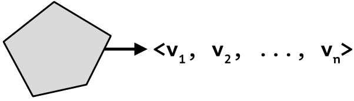

Модели пространственных данных
Основы геоинформатики. Лекция 2
Три уровня моделирования

- Концептуальная модель (ГОСТ Р 43.0.3-2009 2018)
-
Абстрактная модель, определяющая структуру исследуемого объекта (составные части и связи), свойства составных частей, причинно-следственные связи
- Модель пространственных данных (Лурье 2016)
-
Набор логических правил формализованного цифрового описания объектов реальности как пространственных объектов.
- Модели пространственных объектов
-
Геометрические примитивы, используемые для координатного описания пространственных объектов или их частей.
Концептуальные модели
В реальном мире существует бесконечное разнообразие явлений.
Концептуальные модели
Объектно-ориентированная модель используется когда явление интерпретируется как состоящее из дискретных объектов с четкими границами. Характеристики объектов в пределах их границ предполагаются постоянными.
Здания имеют четкие границы и моделируются как отдельные объекты
Концептуальные модели
Сетевая модель используется для интерпретации явлений, состоящих из множества связанных между собой объектов. Сетевая модель является производной от объектно-ориентированной.
Автомобильные дороги образуют сетевую структуру
Концептуальные модели
Модель географических полей используется для интерпретации явлений, сплошным образом покрывающих пространство. Как правило, моделируемая характеристика явления меняется непрерывно, но это не является обязательным условием.
Земная поверхность имеет сплошной характер, ее высота меняется [не]прерывно
Концептуальные модели
Особенности концептуальных моделей географических явлений:
Всегда являются упрощением реальности.
Обобщают модели картографической локализации (по пунктам, на линиях, по площадям, рассеянной, сплошной).
Выбираются в соответствии с масштабом и целью исследования, а также способом интерпретации явления.
ПримерРельеф может рассматриватиься как совокупность форм (объектно-ориентированная модель) и как поверхность (модель географического поля).
Определяют выбор модели пространственных данных.
Модели пространственных данных
Модель пространственных данных задаётся отображением множества объектов на множество значений их атрибутов.
Простой объект имеет одно значение каждого атрибута.
Каждый объект имеет кортеж значений атрибутов. Объект называется векторным, т.к. любая точка на границе описывается векторным уравнением.

Сложный объект имеет множест-во значений каждого атрибута.
В каждой точке, принадлежащей объекту, существует кортеж значений атрибутов. Его можно запросить с помощью функции, которая называется покрытием.

Векторное уравнение
Векторное уравнение позволяет получать координаты промежуточных точек на основе конечного числа опорных точек.
Пусть \(\mathbf{p_0}\) — начальная точка отрезка, а \(\mathbf{p_1}\) — конечная точка.
Тогда произвольная точка \(\mathbf{p}\) на отрезке определяется значением параметра \(0 \leq t \leq 1\) в векторном уравнении:
\[ \mathbf{p} = (1-t)\mathbf{p_0} + t\mathbf{p_1} \]
Векторная модель
Simple Features — стандарт OGC (2010), который определяет общую модель хранения и доступа к простым (векторным) объектам.
- все геометрии состоят из точек;
- все точки в геометрии имеют одинаковую размерность;
- размерность точек может быть 2, 3 или 4.
В дополнение к обязательным измерениям \(X\) и \(Y\) возможны:
- \(Z\), обозначающее высоту
- \(M\), обозначающее некоторую меру — например, время
Существует 4 варианта координат: \(XY\), \(XYZ\), \(XYM\) и \(XYZM\).
В географических координатах \(X\) — долгота, \(Y\) — широта.
Векторная модель
Стандарт включает в себя 17 моделей пространственных объектов.
Основными являются 7 моделей:
- Линейно связные:
POINT,LINESTRING,POLYGON - Линейно несвязные:
MULTIPOINT,MULTILINESTRING,MULTIPOLYGON,GEOMETRYCOLLECTION
Линейно связным называется пространство, в котором любые две точки можно соединить непрерывной кривой.

Оставшиеся виды моделей включают: CIRCULARSTRING, COMPOUNDCURVE, CURVEPOLYGON, MULTICURVE, MULTISURFACE, CURVE, SURFACE, POLYHEDRALSURFACE, TIN, TRIANGLE.
Векторная модель

Векторная модель
Линейно связные модели пространственных объектов.
| Тип | Описание |
|---|---|
POINT |
нуль-мерная геометрия, содержащая одну точку |
LINESTRING |
последовательность точек, соединенных прямыми, несамопересекающимися отрезками; одномерная геометрия |
POLYGON |
геометрия с положительной площадью (двумерная); последовательность точек, отрезки между которыми формируют замкнутое кольцо без самопересечений; первое кольцо является внешним, ноль и более остальных колец представляют дырки внутри полигона |
Векторная модель
Линейно несвязные модели пространственных объектов.
| Тип | Описание |
|---|---|
MULTIPOINT |
множество точек; геометрия типа MULTIPOINT называется простой если ни одна пара точек в MULTIPOINT не совпадает |
MULTILINESTRING |
множество линий |
MULTIPOLYGON |
множество полигонов |
GEOMETRYCOLLECTION |
множество геометрий произвольного типа за исключением GEOMETRYCOLLECTION |
Хранение координат
Well-Known Text (WKT) — текстовый формат
POINT (0.5 0.5)LINESTRING (0 1, 0.5 1.5, 1.2 1.2, 2 1.3, 3 2)POLYGON ((0.5 0.5, 2 0, 3 2, 1.5 4, 0 3, 0.5 0.5), (1 1, 0.8 2, 2 2.2, 1.4 1.1, 1 1))MULTIPOINT ((0.5 0.5), (1 3), (2 1), (0.2 2), (2 3), (1.5 1.5))MULTILINESTRING ((0.5 1.5, 1.2 1.2, 2 1.3), (0 1.5, 0.5 2, 1.2 1.7), (2 1.8, 3 2.5))Формат WKT используется в текстовых форматах файлов, а также для визуального анализа координат объектов. Он занимает много места в памяти компьютера и медленно читается/записывается программами.
Хранение координат
Well-Known Binary (WKB) — бинарный формат
POINT: 01 01 00 00 00 00 00 00 00 00 00 e0 3f 00 00 00 00 00 00 e0 3fLINESTRING: 01 02 00 00 00 05 00 00 00 00 00 00 00 00 00 00 00 00 00 00 00 00 00 f0 3f 00 00 00 00 00 00 e0 3f 00 00 00 00 00 00 f8 3f 33 33 33 33 33 33 f3 3f 33 33 33 33 33 33 f3 3f 00 00 00 00 00 00 00 40 cd cc cc cc cc cc f4 3f 00 00 00 00 00 00 08 40 00 00 00 00 00 00 00 40Формат WKB используется в бинарных форматах файлов, в том числе а базах данных. Он занимает мало места в памяти компьютера и быстро читается/записывается программами, но не подходит для визуального анализа.
Особенности векторной модели
- Используется для реализации объектно-ориентированной концептуальной модели.
- Основана на генерализации. Физическое или абстрактное тело представляется в виде конечного множества координат.
- В зависимости от уровня детализации один и тот же объект может представляться с помощью разной модели.
- Значения атрибутов в пределах границ каждого объекта предполагаются постоянными.
Векторная модель не годится для представления географических полей.
Покрытие
- Покрытие (Open Geospatial Consortium Inc. 2005)
-
Пространственный объект, который действует как функция, возвращающая значения
в пределах своей области значений (атрибутивного домена);
в пределах своей области определения (пространственного, временного или пространственно-временного домена);
для любой точки в системе координат покрытия.
Модель покрытий
Модель покрытий предполагает, что можно представить поле изменения атрибутов внутри объектов.

Географические поля определены на бесконечном множестве точек, в то время как любые модели данных состоят из конечного числа элементов. Как обойти это ограничение?

Необходимо внутри объекта создать сетку опорных геометрий и определить функцию, которая сможет интерполировать значения между ними.
Топологическое покрытие
Построение покрытия начинается с простого объекта, обозначающего границу покрытия.

Топологическое покрытие
В топологическом покрытии объект разрезается узлами и дугами на области фиксированных значений поля.

Топологическое покрытие
Функция покрытия в каждой точке возвращает значение полигона, который её покрывает. Покрытие является сплошным.

Топологическое покрытие
Элементы топологической модели имеют свои названия.

Топологическая модель подходит только для представления полей с пространственной структурой в виде областей фиксированных значений.
Триангуляционное покрытие
Построение покрытия начинается с простого объекта.
Триангуляционное покрытие
В объект добавляются известные значения геополя в точках.

Триангуляционное покрытие
Точки данных соединяются сплошной сеткой треугольников — триангуляцией.

Триангуляционное покрытие
Функция покрытия реализуется путем интерполяции (линейной, естественной и т.д.) поля внутри треугольников.

Триангуляционное покрытие
У каждого узла есть ячейка (область влияния). Совокупность таких ячеек называется диаграммой Вороного.

Триангуляционное покрытие
Диаграмма Вороного дает альтернативную функцию покрытия, в которой поле считается постоянным в пределах ячеек.

Диаграмма Вороного

- Диаграмма Вороного
-
Диаграмма Вороного конечного множества точек \(S\) на плоскости представляет такое разбиение плоскости, при котором каждая область этого разбиения образует множество точек, более близких к одному из элементов множества \(S\), чем к любому другому элементу множества.
Триангуляционное покрытие
Элементы триангуляционной модели имеют свои названия.

Растровое покрытие
В растровом покрытии множество узлов с данными поля упорядочивается в виде матрицы — растра.

Растровое покрытие
Сетка четырехугольников на узлах с данными обеспечивает сплошное покрытие объекта.

Растровое покрытие
Функция покрытия реализуется путем интерполяции (билинейной, кубической и т.д.) внутри четырехугольников.
Растровое покрытие
У каждого узла растра есть ассоциированная с ним зона влияния — ячейка (пиксель).

Растровое покрытие
Пиксельное представление даёт альтернативную функцию покрытия, в которой поле считается постоянным в ячейке.

Растровое покрытие
Элементы растровой модели имеют свои названия.

Геометрия растра
Геометрия растра определяет, где именно располагаются в пространстве узлы и может быть описана параметрами:
| Параметр | Назначение |
|---|---|
NCOLS |
Количество столбцов |
NROWS |
Количество строк |
XLLCENTER |
Координата \(X\) левого нижнего узла |
YLLCENTER |
Координата \(Y\) левого нижнего узла |
CELLSIZE |
Размер ячейки (расстояние между узлами) |
Растр может иметь разное расстояние между узлами по осям \(X\) и \(Y\). В этом случае вместо CELLSIZE указывается два параметра: CELLSIZEX и CELLSIZEY .
Сравнение моделей покрытий

Модели покрытий имеют схожие элементы с одинаковыми названиями.
Ячейки имеют альтернативные имена (области и пиксели)
Триангуляцию сокращенно называют TIN (Triangular Irregular Network)
Преимущества моделей
Растр
- Регулярная матричная структура, позволяющая унифицировать операторы обработки данных.
- Компактное хранение (достаточно указать местоположение угла растра).
- Соответствие устройству матрицы сканерных снимков.
TIN
- Иррегулярная структура, позволяющая уплотнять данные в областях высокой изменчивости поля.
- Более точное взаимодействие с векторными данными, в т.ч. совместный анализ.
- Соответствие устройству трёхмерных моделей.
Словарик
Векторные данные
Растровые данные
Покрытие
Узел
Ребро
Грань
Ячейка
Пиксель
Vector data
Raster data
Coverage
Node
Edge
Face
Cell
Pixel